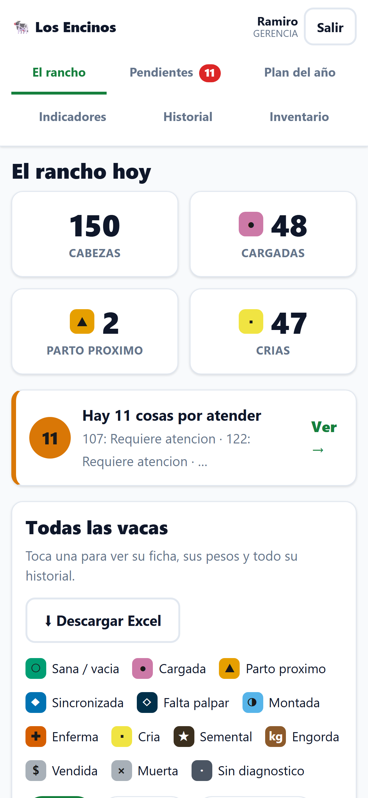
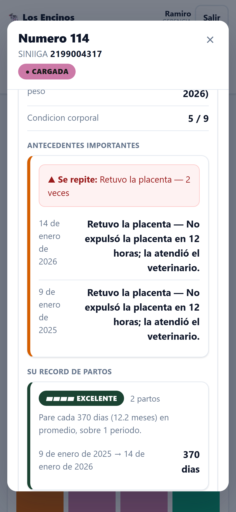
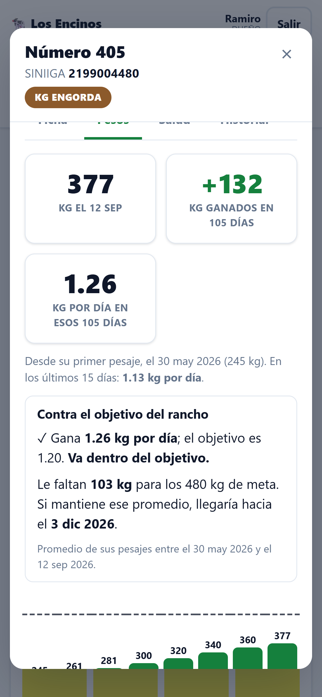
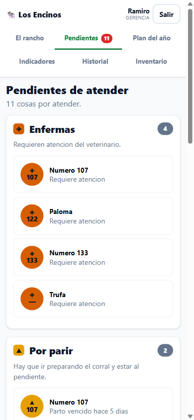

El rancho, de un vistazo
Un cuadro por animal. El color dice cómo está, y el símbolo también: cargada, por parir, enferma, cría, semental, engorda. Los filtros se cruzan: Cargadas y Enfermas deja solo las que son las dos cosas.
Para ranchos de cría y engorda
Cada animal con su historia. Y no te dejamos una aplicación para que la llenes tú: cargamos tu ganado y capacitamos a tu gente.

Qué hace
Un cuadro por animal. El color dice cómo está, y el símbolo también: cargada, por parir, enferma, cría, semental, engorda. Los filtros se cruzan: Cargadas y Enfermas deja solo las que son las dos cosas.
Número de casa y arete SINIIGA juntos, madre y padre, salud e historial con fecha. Si un problema se repite, la ficha lo dice: una placenta retenida dos veces queda marcada arriba.

El último peso, los kilos ganados y los kilos por día, cada cifra con su fecha y los días que abarca. Y una barra por pesaje, para ver cómo sube.

Enfermas, por parir, sincronizaciones sin cerrar y vacas que no han vuelto a cargar. Nadie tiene que acordarse: la lista se arma sola con lo que se captura.

Las pantallas son de un rancho de demostración, con datos ficticios.
Cómo trabajamos
Nos das la información que tengas de cada animal —libreta, Excel o de palabra— y la cargamos completa.
Una para cada persona, con lo que le toca ver: el dueño, quien captura, el veterinario.
A quien va a capturar y, si quieres, al veterinario, hasta que lo hagan solos.
Tres meses de ajustes sin costo a lo que ya existe. Los errores se arreglan siempre sin costo.
Precio
Implementación, una sola vez: se cotiza según el tamaño del rancho. Si la pagas de contado, te regalamos tres meses de suscripción. También se puede a tres meses sin intereses.
Suscripción mensual, según cuántas cabezas tengas. Si el hato crece o se vende ganado, el siguiente periodo se ajusta solo, hacia arriba o hacia abajo.
Precios más IVA. Descuento de 10% trimestral, 15% semestral y 20% anual. Se cancela cuando quieras, sin penalización. Trabajo nuevo, a $350 la hora, siempre cotizado antes.
| Cabezas | Al mes |
|---|---|
| Hasta 200 | $400 |
| De 201 a 500 | $600 |
| De 501 a 1,000 | $900 |
| Más de 1,000 | $1,200 |
Preguntas
Para capturar, sí hace falta señal en el teléfono. Si en el potrero no hay, se anota en el momento y se captura al llegar a donde haya señal, con la fecha en que pasó, aunque haya sido ayer.
Sí. Todo lo que registres es tuyo y lo puedes bajar a Excel cuando quieras. Si cancelas, tienes 30 días para descargarlo.
No se borra: se anota una corrección con el motivo, y el registro original queda tachado a la vista. Así nadie cambia la historia de un animal sin dejar rastro.
Sí, con su propia cuenta: registra y consulta lo sanitario y palomea el plan del año. No ve precios.
La información que tengas de tu ganado, como la tengas, y un teléfono para cada persona que vaya a usarla. Lo demás lo hacemos nosotros.
Contacto
Llena esto y se abre WhatsApp con el mensaje ya escrito. Te contestamos por ahí.
No guardamos nada: lo que escribes viaja solo dentro del mensaje de WhatsApp.